Zak's Math Widgets
Interactive explorations of fractals, symmetry, gravity, chaos, quantum mechanics and waves. Pick one and start playing; everything runs right in your browser.
Fractals & complex dynamics
Symmetry
Gravity & orbits
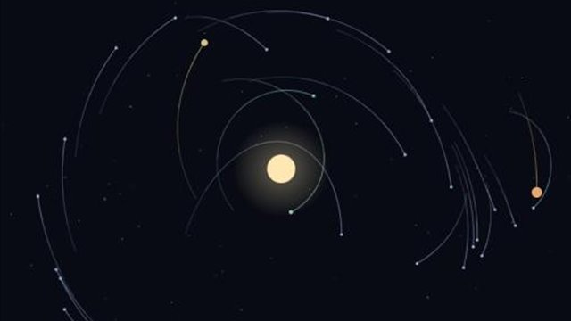
Gravity Well
A 2D N-body simulator. Place bodies, throw them, and watch orbits form.
Open →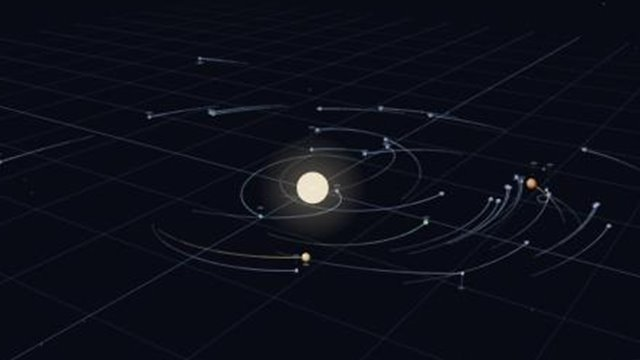
Gravity Well 3D
The same N-body playground in three dimensions, with a rotatable view.
Open →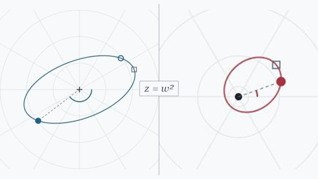
Hooke ↔ Newton
Squaring the plane turns Hooke's spring oscillator into Newton's Kepler orbit.
Open →Chaos
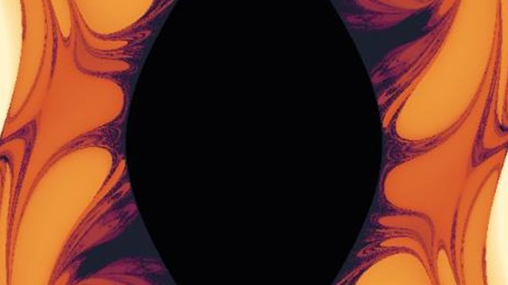
Double Pendulum Flip Map
Every pixel is a pendulum. Color them by when they flip over the top, or by how chaotic they are.
Open →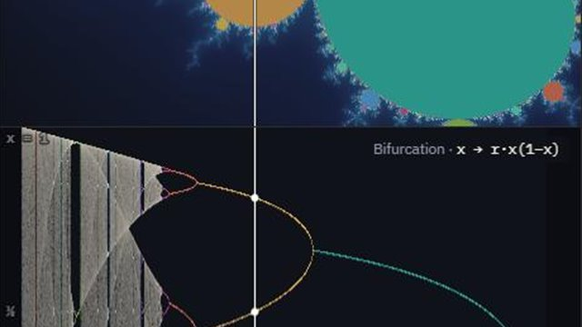
Bifurcation ↔ Mandelbrot
The logistic map's route to chaos, lined up under the Mandelbrot set. Every branch splits exactly where the real axis enters a new bulb.
Open →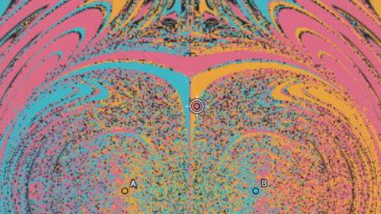
Three-Body Chaos Map
Every pixel is a whole three-body system. Watch the plane of starting points stretch, fold and shatter as gravity plays out, then tap anywhere to launch that orbit.
Open →Quantum mechanics
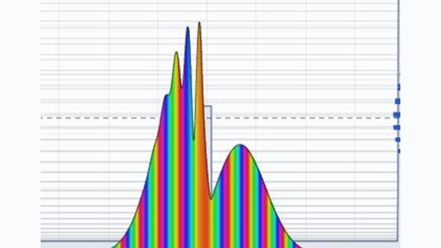
Schrödinger Sandbox
Build potentials and watch a 1D wave packet evolve under the Schrödinger equation.
Open →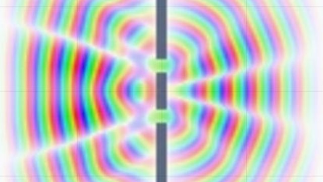
Schrödinger Sandbox 2D
Wave packets in a plane: scattering, tunneling and interference in two dimensions.
Open →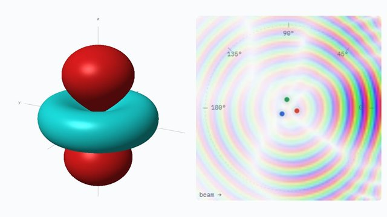
Inside the Atom
Explore hydrogen's orbitals in 3D, make the electron jump and collect the colours of light it gives off, then fire a quantum beam at a proton to reveal its quarks.
Open →Waves & signals
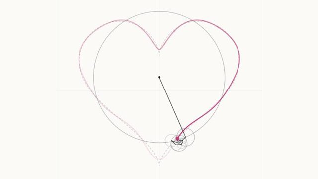
Fourier Studio
Draw any loop and watch spinning circles rebuild it, then split chords, beats and your own voice into their frequencies.
Open →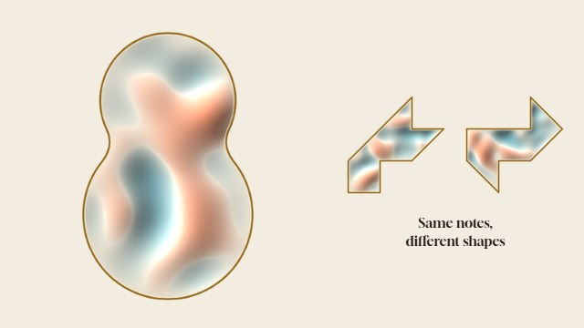
Can You Hear the Shape of a Drum?
Draw any drum and hear its true notes, play a guessing game by ear, meet two different drums that sound identical, and roll chaotic billiard balls.
Open →